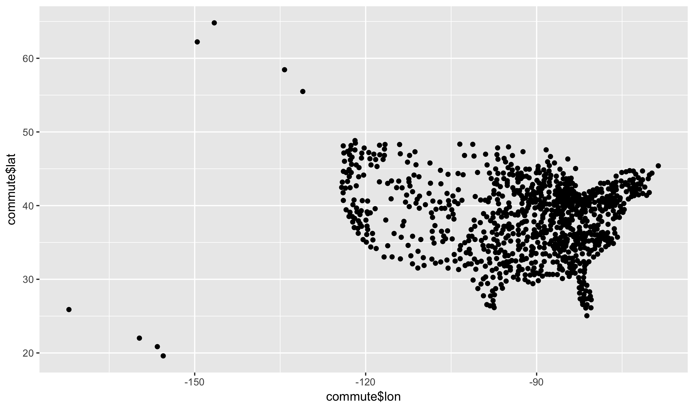

ACS Commuting to Work Dataset
Today, we will again look at the data describing the commuting patterns in 906 metropolitan areas within the United States.
commute <- read_csv("https://raw.githubusercontent.com/statsmaths/stat_data/gh-pages/acs_commute.csv")Here is a description of just some of the variables available for analysis:
- name (chr): name of the metropolitan or micropolitan area
- lat (dbl): latitude of the centroid of the area
- lon (dbl): longitude of the centroid of the area
- prop_housing (dbl): average proportion of income spent on housing (0-100)
- median_income (dbl): median annual household income (dollars)
- avg_duration (dbl): average duration of commute (in minutes)
- median_age (dbl): median age of all people in the area
- same_house (dbl): proportion of households in the same house one year prior (0-100)
- same_county (dbl): proportion of households in the same county one year prior (0-100)
- car_alone (dbl): proportion of workers commuting by car alone (0-100)
- public_transit (dbl): proportion of workers commuting by public transit (0-100)
- time_0900_0959 (dbl): proportion of workers commuting to work between 9am and 10am (0-100)
Our variable of interest is to understand what factors drive people to spend a large amount of their income on housing.
I would suggest addressing this question by drawing two-dimensional scatter plots such as this:
qplot(commute$lon, commute$lat)
But, use prop_housing as the y-variable.
Project 1
Markdown
This document, as well as all of the course’s notes, is written
in a format called Rmarkdown. At the moment we are looking at the
compiled code; it is similar, but distinct, from the .R files we
have been using up to this point for the labs.
Plain markdown is just a very simple format for marking up
texts. Unlike writing text in a word editor, there is nothing
hidden in a markdown file. If you want something to be in
italics, surround it in single stars like this. For bold,
use two. Links use the following format:
site name. If you want to make
something look like code in the output, you can enclose
text in back ticks: print("Hello!").
By openning an Rmarkdown file in RStudio, we can turn the file into a number of other formats. If I hit the preview button above, it will display what the HTML version of the document looks like. I’ll usually export this HTML version and put it on the class website as it is slightly cleaner than the raw format.
The most powerful feature of Rmarkdown is that we can intermix code into the document and actually run it in real time. To do this, we enclose code blocks with three back ticks, and preface the first one with r in squiggly brackets. Every code block will get run in sequence if when we hit the Preview or Knit buttons, but we can also run just this block by hitting the play button to the right of the block. Here, let’s add 1 and 1 together:
1 + 1## [1] 2Your projects will be submitted in RMarkdown. I will give you a template with which to work from.
GitHub Classroom
Let’s now go through and show how to put these together to produce and submit your daily labs. I will do this interactively in class, but here are the steps in case you are returning to these notes at a later time:
- I will send a link to your e-mail that you should follow and accept. Assuming you have a valid GitHub account, this will set up a repository where all of your projects for this semester should be posted.
- Download the project starter code and open it in RStudio.
- When you are finished, select the
Knit to HTMLbutton. This should create an html file in the same location that you saved the Rmd file. You should also have a fileclass01_submit.csvin the same location. - Return to GitHub and drag and drop the three files into your repository. Commit these to the repository with the Commit changes button and then you are done! If dragging and dropping does not work (only officially support on Chrome I believe), select Upload files and do so manually.
Remember that I will not accept late submissions of the projects. It is always better to hand something in on time.